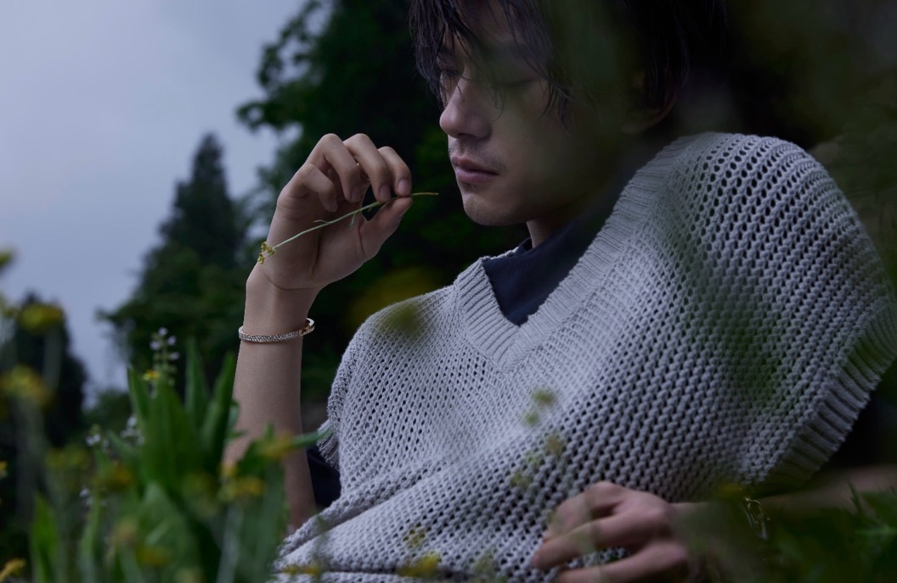

📷
Photography
Catching the way light falls on ordinary afternoons and turning them into keepsakes.
I love the little details that make things feel like home — soft corners, warm words, and a friendly vibe. This is my little corner of the internet.

Three little apps — pick one and dive in.
A dark, futuristic gravity playground — drag to sling planets, watch galaxies and binaries come alive, and tune the universe with sliders.
Open physics sim →A friendly little planner — pick a date, jot a task, and keep your days in order.
Open to-do list →Look up the weather anywhere in the world with a clean, quick forecast.
Open weather app →One face I never get tired of — the reason a quiet frame can feel warm.

Some people light up a frame without even trying — a quiet glance, a half-smile, and suddenly the whole scene feels softer.
Whenever I need a reminder that calm and presence can be magnetic, I come back to this picture. It's a small keepsake of why I keep watching.
★ Forever on my listThe small joys that make my days a little brighter.
Catching the way light falls on ordinary afternoons and turning them into keepsakes.
Slow mornings, a warm mug, and a few quiet minutes before the day begins.
Long walks, fresh air, and the calm that comes from being under a big sky.